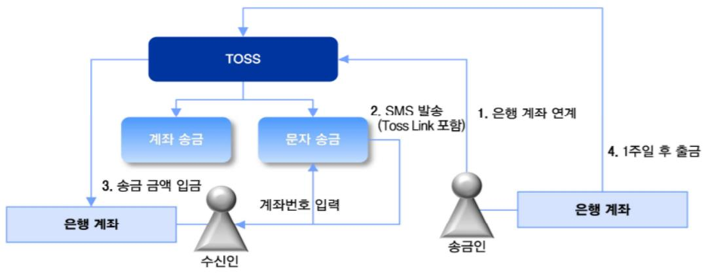
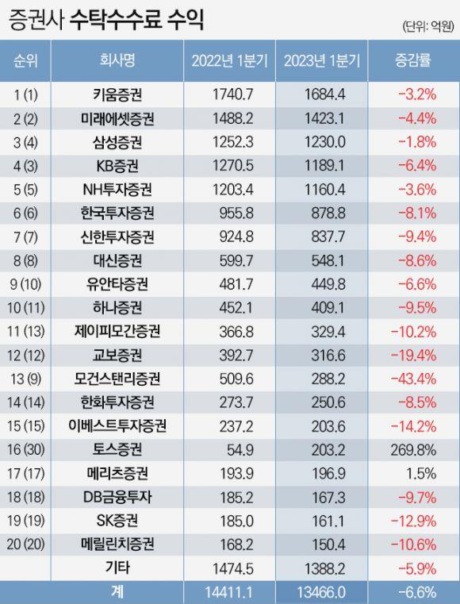
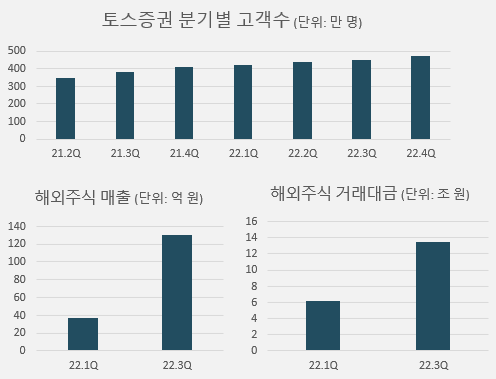

As the center of gravity in finance shifts from banking apps to fintech apps, Toss made its own evolution into a fintech app by launching Toss Securities. Toss Securities passed five million mobile trading system (MTS) users within 26 months of launch, and has outperformed Kakao Pay Securities, which launched around the same time. This study analyzes which specific elements of the financial super-app Toss made Toss Securities' innovation possible, through the lenses of platform business theory, network effects and the flywheel effect.
Viva Republica (Toss) launched its service in February 2015 and established itself as a purely mobile app platform. Just 18 months later, in August 2016, it passed KRW 1 trillion in cumulative transfers, and in December 2017 it passed KRW 10 trillion. The service allowed money to be sent through a linked bank account simply by sending an SMS to a phone number, and introduced innovations that changed the user experience, such as "one-won verification." Thanks to this differentiated experience, monthly active users passed 10 million in October 2019, and Toss has held first place among banking apps since. It launched Toss Payments in August 2020, Toss Securities in February 2021 and Toss Bank in October 2021, and its valuation on the basis of capital raised approaches KRW 10 trillion.

In 2022, however, Toss recorded an operating loss of KRW 247.2 billion. It has secured monthly active users on the back of simple transfers, but has not found the key to transforming its results. Toss Bank is growing its customer numbers and loan balance, raising productivity per employee and net interest income, but against commercial banks recording trillions of won in net profit on rising rates and vast capital, it looks hard to secure competitive advantage in banking. Commercial banks have also sharply increased IT investment and consolidated the proliferation of affiliate apps to improve the competitiveness of their banking apps, so Toss Bank's distinctiveness is gradually eroding.
Over recent years, however, a worldwide trend has emerged in which the center of gravity in finance shifts from banking apps to fintech apps. As of 2020, leading fintech apps recorded 10.8 times more sessions per user per month than leading banking apps. The conclusion follows that for the Toss app to differentiate itself clearly from banking apps it must establish itself firmly as a fintech app — and that change is being realized precisely through the launch of Toss Securities.
A super-app is an app in which many services can be used without installing any other app. Naver, Yanolja, Ohou, Baemin and Danggeun Market are examples. In finance, however, the affiliates under large financial holding companies had clearly divided their service territories, and because the revenue structure leaned heavily on offline business and B2B, developing mobile apps was seen as less important — so the concept of a "financial super-app" did not exist. Toss, which began as an ordinary app, developed to provide almost every service related to finance — simple authentication certificates, credit scores, linked financial products, payments, utility bill payment, used car sales — and can be regarded as having established itself as the first financial super-app.
Retail investors' trading in Korea's stock market has grown sharply in recent years. Low interest rates, rising property prices and the need to prepare for old age amid rapid ageing have made equity investment the one route by which individuals can beat the market. The quality of investing is improving too, with investors moving beyond blind speculation to study for themselves and build portfolios. The trend is even more pronounced in overseas equities, which offer greater scale and a wider range of opportunity, and investors in their twenties and thirties are driving that growth. IT-based mobile apps capable of targeting this generation — sensitive to information technology and used to sharing information within communities — will be the key to taking the lead in retail securities investment.
Toss Securities was established on 27 November 2018 and began operations on 15 March 2021. In the first half of 2023 its operating income grew 91% year on year and its operating loss narrowed to KRW 4 billion; if the trend holds, it looks likely to reach break-even in 2024. In the first quarter of 2023, brokerage commission income fell at every securities firm except Meritz, while Toss Securities grew about 270% — an outstanding result running against the market.

Toss Securities passed five million mobile trading system (MTS) users in May 2023 — meaning that, against a total Korean investing population of 14.4 million, about 35% have signed up for the Toss Securities MTS.
Where other securities apps forced a home trading system (HTS) into a mobile shell, Toss's MTS was designed thoroughly around mobile, boldly omitting unused functions and unnecessary indicators. Its "real-time fractional trading in overseas equities," an industry first, allows high-priced overseas shares to be traded in fractions in real time with no time lag; as of April 2023 it held a 21% share of the overseas equity market, the highest in the industry. In the company's own survey, customers cited enjoyable and varied events, an easy and simple trading experience, intuitive screens, readable investment content, and differentiated services such as stock accumulation and stock cashback as reasons for their satisfaction.

The most important condition for a platform to function well is a structure in which the cross-side network — where the behavior of one user group affects another — works smoothly. Forming that cross-side network requires three elements: a two-sided market (a medium connecting both user groups), a cross-subsidy device (a clear reason and incentive for users to use the platform), and a pricing strategy (deciding who pays how much). Monohoming — a strategy of attracting users exclusively to one platform and encouraging them to operate only within it — offers an exclusive experience, along with lock-in effects (the loss incurred on leaving accumulated data, profiles and connections behind) and economic advantages.
The network effect is the principle that an increase in the number of users participating in a platform increases the value of the system as a whole. The flywheel effect describes a process in which small early gains accumulate and, through repetition, lead to large results — likened to a carousel that turns slowly at first but accelerates once it starts moving. Amazon's virtuous cycle, and Uber, which began with a handful of vehicles and grew through the interaction between riders and drivers, are the classic examples.
The innovation distinctive to a super-app-based Toss Securities shows clearly at each step of an individual's overseas equity investing. At account opening and verification, ordinary investment apps require personal information and a copy of an ID document, whereas a Toss user can access the service with nothing more than a fingerprint. Linking a bank account and currency exchange require connecting to a separate banking app in ordinary investment apps, but in Toss, Toss Bank and Toss Securities sit on the same screen, so both can be handled with a single navigation and verification. In searching and analyzing stocks, users enjoy the full benefit of Toss's user experience innovation, and the simple transfer function stands in contrast to the dated UX of ordinary investment apps requiring an account number and password. After executing a trade, an intuitive community has formed through per-stock discussion rooms and expert badges, appealing to the desire of investors in their twenties and thirties — the main age group for overseas equity investing — both to show off successful trades and to seek out expert opinion.
A financial super-app combining a mobile-native MTS with simple transfers and internet banking produces four innovations from a network effect perspective: ① building a comprehensive service ecosystem in which many financial services are available in one app; ② convenience and ease of access, with user information registered once granting access to every service; ③ efficient movement of funds and transaction processing, with registered account information used automatically across services; and ④ data integration and personalization, analyzing investment disposition and spending habits together to enable tailored investment suggestions and product recommendations.
Through its convenience and range, a financial super-app raises user satisfaction and increases user numbers, forming a virtuous cycle that continually raises corporate value alongside the platform's growth. Within that cycle, a convenient trading environment raises accessibility; a wide range of stock information builds users' investing ability; and personalized recommendations and alerts increase dependence on the platform. Community and social features widen the user base, while partnerships adding deposits, loans and investment products further strengthen the platform's competitiveness.